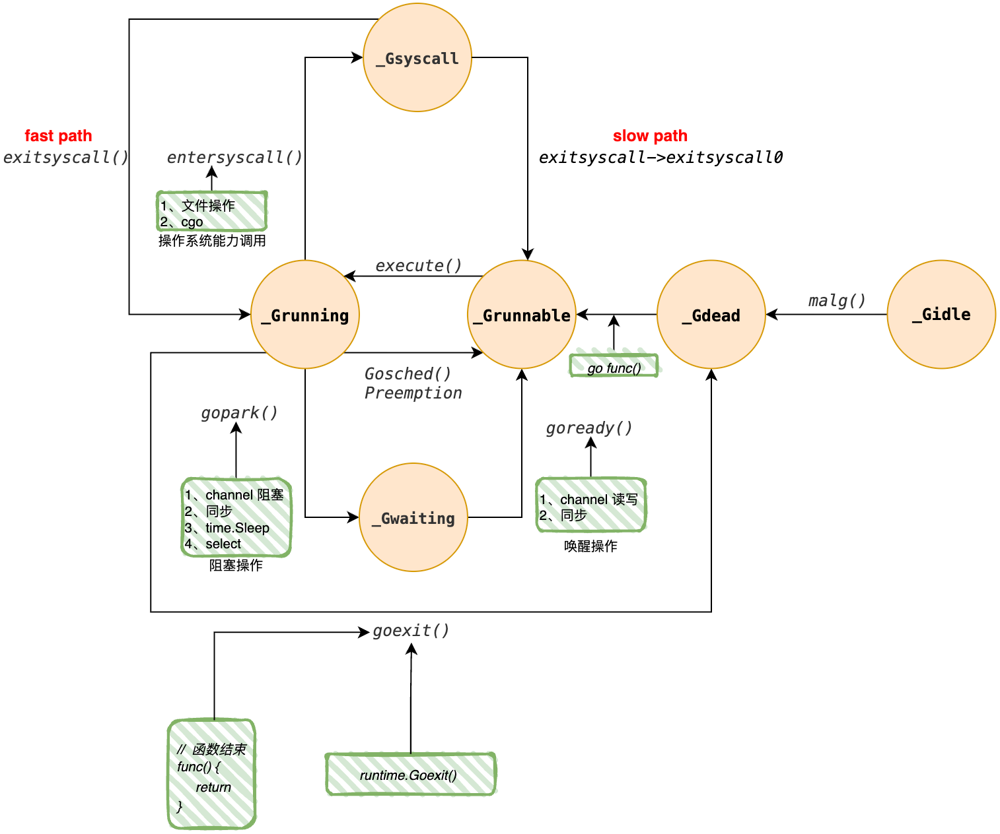

📄 本文共 2084 字，预计阅读 5 分钟
01. Goroutine(G)
Abstract
Keywords: Goroutine, 生命周期
1. 核心结构
我们从 Goroutine 的源码及其核心状态开始分析，结合其整个生命周期的变换及 runtime 函数调用进行剖析。
1.1 源码
下面的代码片段基于 go1.24.5 版本，展示了 g 结构体中与调度息息相关的关键字段。
type g struct {
stack stack // 栈内存范围 [stack.lo, stack.hi)
stackguard0 uintptr // 关键字段：用于栈溢出检测和抢占调度检查
m *m // 当前绑定执行该 G 的系统线程 M
sched gobuf // 上下文保存核心 (SP, PC, BP 等)
atomicstatus atomic.Uint32 // 原子操作的生命周期状态
_panic *_panic // 当前 G 的 panic 链表
_defer *_defer // 当前 G 的 defer 链表
goid uint64 // Goroutine 的唯一标识
// ... 其他字段
}
1.2 成员说明
stack
stack 字段描述了 Goroutine 的执行栈内存范围。这是 Goroutine 与操作系统线程（Thread）的重要区别之一：Goroutine 的栈初始大小仅为 2KB，但支持动态扩容。lo 和 hi 分别记录了当前栈空间的低地址和高地址边界。
stackguard0
这是一个具备双重用途的关键字段，直接参与 Go 的协作式调度与栈管理：
- 栈溢出检测：Go 编译器会在函数头部插入检查指令，比较当前的栈指针（SP）是否小于
stackguard0。若小于，说明栈空间不足，触发runtime.morestack进行栈扩容。 - 抢占调度 (Preemption)[^3]：当 sysmon 后台监控线程发现某个 G 运行时间过长（>10ms）时，会向该 G 所在的操作系统线程（M）发送一个
SIGURG信号。操作系统中断当前线程的执行并进入内核态，随后回到用户态执行 Go 运行时的信号处理函数（sighandler）。该处理函数会检测到这是一个抢占信号，于是修改当前 G 的程序计数器（PC），使其在恢复执行时立即跳转到runtime.asyncPreempt汇编函数。该函数会保存所有寄存器状态，将 G 的状态修改为_Grunnable并放入全局队列，最后执行schedule()让出 CPU。
m
代表当前的 Machine。在 GMP 模型中，G 必须绑定到 P，然后由 M 来驱动执行。
- 该字段指向当前正在运行该 G 的 M。
- 当 G 被放回队列（如
_Grunnable）或进入阻塞时，该字段通常会被置空或更新，标志着 G 与 M 的解绑。
sched
这是上下文切换 的数据载体。gobuf 结构体用于保存 CPU 的寄存器状态，以便“恢复现场”：
- sp (Stack Pointer): 栈顶指针，用于恢复函数调用栈。
- pc (Program Counter): 程序计数器，记录下一条需要执行的指令地址。
- bp (Base Pointer): 栈基址指针，辅助调试和栈回溯。
- ctxt: 闭包上下文等。
当 G 被暂停（例如 gopark 挂起或被抢占）时，当前的寄存器值会被保存到 sched 中；当 G 被再次选中调度时，Runtime 会将 sched 中的值加载回 CPU 寄存器。
atomicstatus
记录 Goroutine 的生命周期状态。这是一个原子变量，确保并发状态流转的安全性。(具体状态定义见下文“生命周期”章节)
goid
Goroutine 的唯一标识符。
- 注意：Go 官方未暴露获取 goid 的 Public API，旨在防止开发者滥用 GLS (Goroutine Local Storage) 模式，鼓励使用
context.Context进行隐式参数传递。但在 Runtime 内部追踪和调试（Trace/pprof）时，它是区分 G 的关键索引。
2. 生命周期
Goroutine 的生命周期由 atomicstatus 字段记录，其核心流转逻辑如图1所示：

图 1: Goroutine 状态流转图
{kind=link}
以下是各状态的深度解析：
_Gidle (空闲/未初始化)
G 被分配了内存但尚未初始化的状态。在现代 Go Runtime 中，只有全新申请的 G 才会短暂处于此状态。
_Gdead (死亡/可复用)
G 已完成执行或刚被初始化清理后的状态。
- 复用机制：处于此状态的 G 会被缓存在 P 的本地
gFree列表或全局sched.gFree列表中。 - 触发点：当用户调用
go func()时，Runtime 会优先从gFree中取出一个_Gdead的 G 进行复用（Re-use），将其重置为_Grunnable，从而避免频繁的内存分配与 GC 压力。
_Grunnable (就绪态)
G 已经准备好运行，正在等待被调度。
- 位置：它们可能存在于 全局运行队列 (Global Run Queue)、P 的本地运行队列 (Local Run Queue) 或
runnext(高优先级插队位置) 中。 - 转换：一旦调度器（M）选中了它，它就会与 M 绑定，转换为
_Grunning。
_Grunning (运行态)
G 正在 M 上执行用户态代码。这是实际消耗 CPU 的阶段。从该状态出发的转换路径最为复杂：
- 用户态阻塞 (To
_Gwaiting)- 场景：Channel 读写、Mutex 加锁、
time.Sleep、Select 等待、网络 I/O。 - 关键点：此时 M 不会阻塞。M 会执行
gopark将 G 换出，并立即寻找下一个可执行的 G。这是 Go 高并发的核心优势。
- 场景：Channel 读写、Mutex 加锁、
- 系统调用阻塞 (To
_Gsyscall)- 场景：文件 I/O、CGO 调用等。
- 关键点：此时 M 会陷入内核态阻塞。为了避免 P 闲置，P 会与 M 分离。
- 被抢占或主动让出 (To
_Grunnable)- 场景：执行时间过长被 sysmon 抢占，或调用
runtime.Gosched()。 - 关键点：G 会被放回全局队列，M 继续执行其他任务。
- 场景：执行时间过长被 sysmon 抢占，或调用
- 执行结束 (To
_Gdead)- 场景：函数返回或
runtime.Goexit()。 - 关键点：G 进入
gFree列表等待复用。
- 场景：函数返回或
_Gwaiting (等待态)
在此状态下，G 处于用户态阻塞，而 M 是活跃的。Runtime 将 G 挂载到特定的等待队列中，直到条件满足（如数据到达、锁释放）才通过 goready 将其唤醒为 _Grunnable。
| 阻塞原因 | G 的状态 | G 栖身的数据结构 (Waiting Queue) | 关键中间层 |
|---|---|---|---|
| Channel | _Gwaiting |
hchan.recvq 或 hchan.sendq | sudog |
| Mutex | _Gwaiting |
semaRoot (全局信号量树) | sudog |
| Sleep | _Gwaiting |
P.timers (四叉堆/最小堆) | timer |
| Net I/O | _Gwaiting |
Netpoller (OS Epoll/Kqueue) | pollDesc |
| Select | _Gwaiting |
所有涉及 Channel 的 recvq/sendq | sudog |
_Gsyscall (系统调用)
当 G 调用底层操作系统接口（如磁盘 I/O）时进入此状态。Runtime 对此进行了极致优化：
- Fast Path (乐观返回)
- 场景：系统调用耗时极短（Sysmon 尚未介入）。
- 流程：M 从内核返回，发现原来的 P 还在（或者抢到了空闲 P）。
- 结果：G 直接切回
_Grunning，无调度开销。
- Slow Path (悲观排队)
- 场景：系统调用耗时较长（>10ms），Sysmon 强行剥离了 P。
- 流程：M 返回后发现没有 P 可用。
- 结果：M 将 G 放入全局队列（变为
_Grunnable），M 自身解绑并休眠。
3. 总结
通过对 g 结构体及其生命周期的分析，我们可以提炼出 Go 调度器（GMP）实现高吞吐、低延迟的三大核心设计哲学：
3.1 资源复用与轻量级
- 栈内存：从 2KB 开始按需扩容，远小于线程的 MB 级别，支撑了百万级并发。
- 对象池化：
_Gdead状态和gFree列表的存在，使得 G 并非是一次性资源。高频的 Goroutine 创建与销毁（如 HTTP Server 处理每个请求）实际上是极低成本的状态重置，而非昂贵的内存分配。
3.2 M 与 G 的阻塞解耦
- 用户态阻塞（Gwaiting）：将 Channel、锁、网络 I/O 等逻辑层面的等待，转换为 Runtime 内部的数据挂载。G 停工，但 M 不停工，CPU 始终在全速运转处理计算任务。
- 内核态阻塞（Gsyscall）：对于无法避免的系统调用阻塞，Go 采用了“超时剥离（Handoff）”策略。既保证了短调用的亲和性（Fast Path），又防止了长调用导致 CPU 核心闲置（Slow Path）。
3.3 协作与抢占的平衡
- Go 早期采用协作式调度（依赖函数调用），但在 1.14+ 引入了基于信号的异步抢占。
stackguard0机制保护了栈安全，还保证了即使是死循环的 G 也无法长时间霸占 P，从而实现了全局公平性，防止了系统中出现“饿死”现象。
综上所述，Goroutine 不仅仅是一个轻量级线程，它是一个拥有独立栈、独立状态机、且被 Runtime 深度管理的执行单元。这种设计使得开发者可以用同步的代码逻辑（如 Read），享受到异步非阻塞的高性能内核。